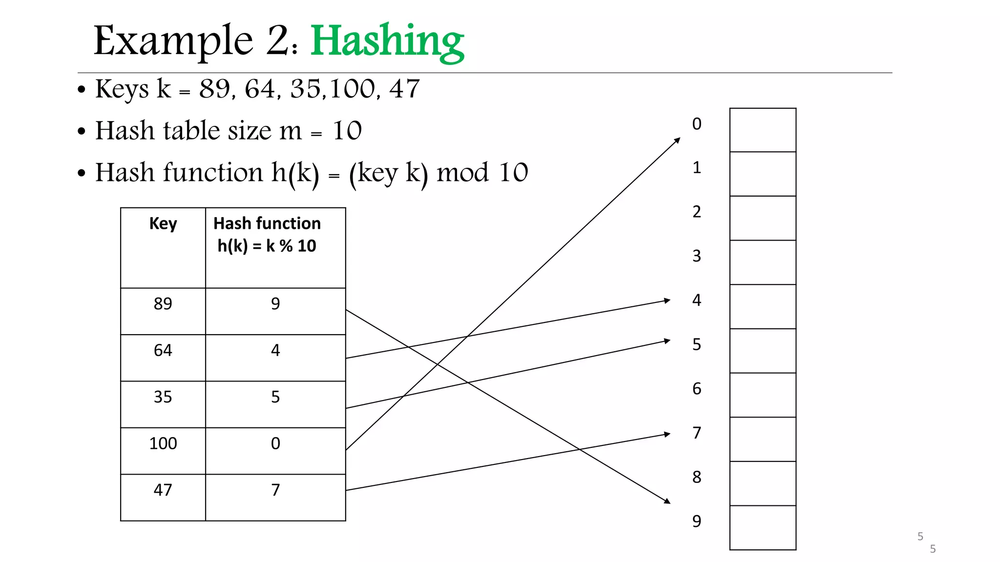
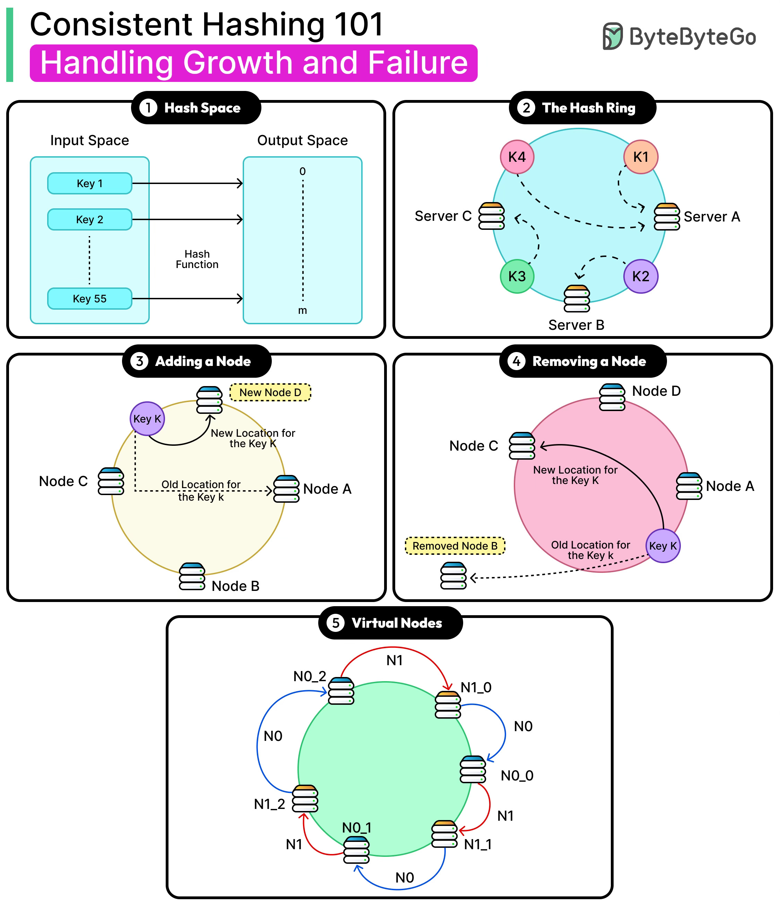

System Design Mastery
Master scalable systems with premium insights
🔄 Consistent Hashing: Efficient Distributed Data Placement
1️⃣ What is it?
Consistent Hashing is a technique used to distribute data across multiple servers in a way that minimizes data movement when servers are added or removed.
In simple words:
It helps decide which server should store which data, efficiently and dynamically. This means you can add or remove servers without massive data reshuffling.
2️⃣ Normal Hashing vs Consistent Hashing
Step 1️⃣: What are "Keys"?
Key = identifier of data
Examples:
- user_id = 21
- username = "anna"
- session_id = "abc123"
- product_id = 9001
When we say "Key moves": The data related to that key moves to another server.
👉 If key = 21 moves, that user's entire profile data moves to another server.
Step 2️⃣: What are "Servers"?
Servers are machines that store data.
- Each server stores a portion of the total data
- When we add a new server → we redistribute some keys to it
- Servers work together to store the complete dataset
Step 3️⃣: Why Do We Need Hashing?
The Problem: If you have 3 servers, how do you decide which server stores which data?
👉 Which server stores user 21?
👉 Which server stores user 99?
👉 Which server stores user 500?
The Solution: We use a hash function
hash(user_id) → number
That number helps us decide which server to store data in. Same user always goes to the same server.

📊 Normal Hashing Diagram
Step 4️⃣: What is the "Ring"?
The ring is a logical circle of numbers (like a clock):
- Numbers from 0 → 360 degrees
- We place servers on this circle
- We place keys on this circle
📌 Important: It is not a real ring. Just a mathematical concept to help us visualize the distribution.

📊 Consistent Hashing Diagram
Step 5️⃣: How Key Goes to Server (Simple Example)
Suppose we have:
- Server A → position 50
- Server B → position 150
- Server C → position 300
Now for User 21:
- hash(user_id = 21) = 120
- 👉 Move clockwise on the ring
- 👉 First server you hit stores the data
Starting at 120 → next clockwise server is 150 (Server B)
👉 User 21 data goes to Server B
Step 6️⃣: What Happens When We Add a Server?
Now suppose we add Server D → position 130
What happens to User 21?
- User 21 hash = 120
- Now next clockwise server is: 130 (Server D)
👉 User 21 data must move from Server B → Server D
✨ But only keys between 50 → 130 move. Other keys stay the same!
What Actually Moves?
Not just the key, but the actual stored data:
- 👤 User profiles
- 💬 Messages and conversations
- 🔐 Sessions and authentication data
- 📊 Any data associated with that key

📊 Consistent Hashing Diagram
Why is Normal Hashing Bad?
❌ Normal Hashing
Formula: server = hash(key) % total_servers
When N (number of servers) changes:
- Almost ALL data must be re-mapped ❌
- Huge data movement
- Cache invalidation
✅ Consistent Hashing
Uses a hash ring concept where servers are placed on a circle.
When N (number of servers) changes:
- Only small portion remap ✅
- Minimal data movement
- System continues to work
3️⃣ What Breaks Without It?
Without consistent hashing:
- 🔴 Adding 1 new server → data for all users moves
- 🔴 Removing 1 server → entire cache breaks
- 🔴 Huge performance degradation during scaling
📌 Example: Redis cluster scaling from 5 → 6 nodes causes total rehash with normal hashing ❌
4️⃣ When to Use / When NOT to Use
✅ When to Use
- 📦 Distributed caching (Redis cluster)
- 🗄️ Distributed databases (DynamoDB, Cassandra)
- ⚖️ Load balancing
- 🔀 Sharded systems
❌ When NOT to Use
- 🖥️ Single server systems
- 📱 Small applications
- ⚙️ When scaling is fixed and static
🧠 How It Works (Simple Explanation)
- Servers are placed on a hash ring at specific positions (0-360)
- Data keys are hashed to the same ring using the same hash function
- A key is assigned to the next server clockwise from its position
- When a server is added: Only nearby keys move (those between the new server and previous server)
- When a server is removed: Only its keys move to the next server clockwise. Other keys stay on their servers
🎯 Summary
Consistent hashing distributes data across servers such that minimal keys are remapped when nodes are added or removed, enabling scalable and resilient distributed systems. It's a fundamental technique for building systems that can grow horizontally without massive performance degradation.